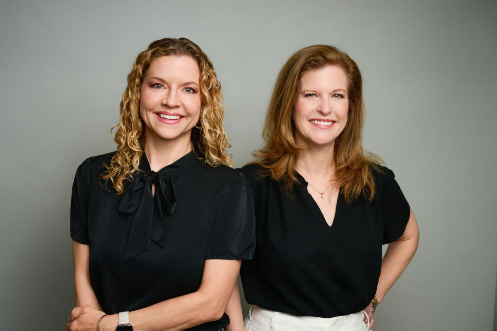

Specialists
The identity, written down
The logo and typefaces are settled, and the palette now follows the client's moodboard. This document extends them into a working system: a type scale, a spacing scale, contrast rules for the palette, and the voice the site is written in. Version 2, November 2026.
Two closed paths, drawn once
The mark exists as three SVGs: gold, ink, and white. Use the files as supplied. Do not re-vectorize, redraw, or regenerate it from a raster — an auto-traced version was rejected for lumpy curves and is not to return. The files predate the moodboard: the gold is #B8842F, a shade darker than Warm Gold, and the ink is version 1's charcoal. Recolouring them to Warm Gold and Deep Navy would change the fill only [CONFIRM]
Clear space on all four sides equals half the mark's height. Nothing enters it — no type, no rule, no image edge, no button.
40px is the floor for the mark alone; below that the hemispheres close up. The full lockup needs 88px of mark or more — under that the eyebrow line stops being readable. Mark alone below 40px, lockup above: at small sizes, drop the wordmark rather than shrink it.
Mark over stacked wordmark, centered
Specialists
Specialists
Mark, then "Neuropsychology / Specialists" in Playfair Bold over two lines, then "of Austin" in Playfair Italic SemiBold in gold flanked by hairline rules, then the Montserrat caps line.
The rules sit at top: 0.157em, and the row holding them sets its own font-size so the em resolves against the italic, not the inherited size. That centers them on the x-height of the "o" in "of". Without it they ride visibly high. Keep it.
On navy, the wordmark goes white and "of Austin" stays Warm Gold, which is 4.6:1 there. The rules stay gold. Version 1's lifted gold for dark grounds is retired.
Six colours, from the client's moodboard
The client's moodboard sets the palette, and replaces version 1's charcoal and its five neutrals. Navy carries the text and the dark grounds. Ivory and blue gray are the quiet grounds, sage is the one band of colour, and gold brings the warmth: buttons, rules and the mark.
Where a palette colour cannot reach AA on its own, one of these stands in. Each keeps its parent's hue.
"Deep Navy builds trust and conveys professionalism."
"Sage Green brings balance, calm, and a sense of well-being."
"Warm Gold adds warmth, optimism, and a human touch."
"Soft neutrals keep the design clean, approachable, and focused on your message."
Three families, one job each
Why Libre Franklin for body copy. The brief left this open and asked for one quiet, highly legible serif or humanist sans. Libre Franklin is a humanist sans with open apertures and a tall x-height, which holds up at 17px on a phone in bad light — the condition most of this site will be read in. It stays out of Playfair's way and reads as clinical rather than corporate. A second serif under Playfair would have muddled the hierarchy; Montserrat is geometric and wrong for long text.
Desktop and mobile, in pixels
Mobile values apply below 768px. Body never goes under 17px anywhere, including captions on tables and figures — captions get 15px only for single-line labels, never for sentences.
65–75 characters for running text. On the blog post template that is the hard rule; elsewhere cap the text column at 680px.
Playfair: −0.015em at H1, −0.01em at H2/H3, none below. Montserrat: 0.24em, button labels 0.1em. Libre Franklin: none.
Navy on white is 14.0:1. Navy Soft on white is 7.1:1, fine for captions and meta. Warm Gold on white is 3.0:1, so gold type uses Gold Deep, 5.9:1. Every pair is in section 03.
Base 8. Multiples only.
Every margin, padding, and gap is one of these. No arbitrary values, no odd numbers. Layout gaps come from flex and grid gap, not from margins on children.
12 columns at 1440 and 768, 24px gutters. Single column below 768 with 24px page margins.
375, 768, 1440. Content column maxes at 1160px; text column at 680px.
44px minimum, always. That sets buttons at 48px tall and nav rows at 56px.
Square corners throughout. Radius 0. No shadows: separation comes from hairlines and the ivory, blue-gray and sage grounds.
Real rooms, real light
Three portraits have arrived: the partners together, Dr. Paulos and Dr. Bunner. The rest is commissioned. Until it arrives, every layout must read as finished without it: the placeholders below mark where images go, and each one has a typographic fallback.
no people
Fallback: the process step set in Playfair with its duration.
seated, plain wall
Fallback: name and credentials over an ivory field, no silhouette icon.
1500 W 38th, entrance visible
Fallback: address block plus the map on Contact.

The partners together. Home, Our Providers.

Dr. Paulos, cropped 4:5. About, and her post bylines.

Dr. Bunner, cropped to match. About, and her post bylines.
Explain. Do not reassure.
The reader is usually a worried parent, an adult with questions about attention, learning or a brain injury, or a professional making a referral. They want to know what happens, how long it takes, and what it costs. Answering that precisely is the reassurance.
Our dedicated team is passionate about empowering patients and families on their journey toward understanding cognitive health through a comprehensive, holistic approach to assessment.
Two board-certified neuropsychologists. We test cognitive function and tell you what the results mean for school, work, and home.
Fees for evaluation services are determined on an individual basis and are the responsibility of the patient or guarantor. Insurance reimbursement is not guaranteed.
An evaluation costs $3,850, in three payments. We do not bill insurance. We give you a superbill to send to your insurer, which may pay part of it as an out-of-network claim. Call them first and ask.
Testing is conducted over the course of a session tailored to the individual needs of each patient, with the duration varying based on a number of clinical factors.
Testing takes five to ten hours, usually in one visit, with breaks built in. How long depends on the questions the evaluation has to answer.
If a sentence could appear on any medical practice's site, it does not belong on this one.
What a post has to clear
This governs every post on Insights, including ones drafted with AI assistance. A post that fails any line below does not publish.
Every post is bylined to Dr. Bunner or Dr. Paulos, never to the practice. That clinician reviews it before it goes live. An unreviewed post does not publish.
Every clinical claim is attributable, cited inline with a link. No statistic appears without a source. If a claim cannot be cited, cut it.
A post explains a concept or reports research. It never diagnoses, never gives treatment advice, and never presents a case study — including a disguised one.
600–1,200 words. Longer only when the subject earns it. The template holds up at 400 and at 2,500.
The title states the subject. No curiosity gaps, no listicles under five items, no question-mark titles the post does not answer.
Section 08 applies without exception. Plain sentences, no marketing verbs, banned-word list enforced.
Fixed set. The list does not grow without a decision to grow it.
Use these verbatim
From the client's copy, November 2026. Where the site and this section disagree, the site is wrong.
1500 W 38th Street, Suite 23
Austin, TX 78731
Board-certified clinical neuropsychologist with more than 25 years of experience working with children, adults, and families. Doctorate in clinical psychology from The University of Texas at Austin. Particular interests in ADHD, dyslexia, dyscalculia, dysgraphia, autism spectrum disorders and traumatic brain injury. Works with physicians, schools and therapists; supervises doctoral-level graduate students in neuropsychology and participates in clinical research.
Ph.D. in School Psychology from UT Austin. Internship and a two-year neuropsychology fellowship at Kennedy Krieger Institute / Johns Hopkins School of Medicine. Board certified in clinical neuropsychology. Active in the International Neuropsychological Society, the American Academy of Clinical Neuropsychology and the Austin Neuropsychological Society. Specialties include brain injury, spina bifida, cerebral palsy, ADHD, dyslexia, dysgraphia and autism spectrum disorders. Her bio also lists cognitive rehabilitation, executive function coaching and Cogmed, which the practice does not provide [CONFIRM]
Summaries of the bios on About, which are the client's own words. Affiliations, as the practice states them: APA, NAN, AACN, INS and the Austin Neuropsychological Society. State each clinician's own experience rather than a combined figure; a combined number invites the same problem the 75+ figure created.
Placeholders, marked
The brief bans invented facts, so every open item is marked [CONFIRM] wherever it appears (in red on the site) and must be replaced or removed before launch. The list as of November 2026:
Resolved since version 1: the age range, the fees and consultation fee, Dr. Bunner's experience, office hours, and parking.
The site in site/ is built from this document. Version 1, with the charcoal palette, is kept as Brand Document v1.